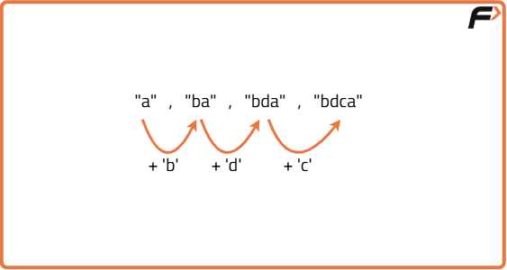

Longest String Chain | (DP- 45)
Problem Statement:
Given an array of strings words[], the task is to return the longest string chain. A string chain is defined as a sequence of words where:
Each word (except the first) can be formed by inserting exactly one character into the previous word.
The first word of the chain can be any word from the words[] array.
The task is to determine the length of the longest chain.
Examples
Example 1: Input: words = ["a", "ab", "abc", "abcd", "abcde"] Output: 5 Explanation: The longest chain is ["a", "ab", "abc", "abcd", "abcde"]. Each word in the chain is formed by adding exactly one character to the previous word. Example 2: Input: words = ["dog", "dogs", "dots", "dot", "d", "do"] Output: 4 Explanation: The longest chain is ["d", "do", "dot", "dots"]. Each word is formed by inserting one character into the previous word.
Disclaimer: Here is the practice link to help you assess your knowledge better. It's highly recommend trying to solve it before looking at the solution.
Approach
Algorithm
- First, sort the words by their length in ascending order. This ensures that when processing a word, all possible shorter predecessors have already been considered.
- For each word, generate all possible predecessors by removing one character at a time. This helps in identifying valid chains that can be formed by appending one character to an existing word.
- Check if any of the generated predecessors exist in the set of already processed words. If a valid predecessor is found, this means the current word can extend the chain of the predecessor.
- Use dynamic programming to store and update the longest chain length ending at each word. The length of the chain for the current word is updated based on the chain length of its valid predecessors plus one.
- Keep track of the maximum chain length found during the iteration through the words. This value will represent the length of the longest word chain.

Code
#include <bits/stdc++.h>
using namespace std;
class Solution {
public:
// Function to return the length of the longest string chain possible
int longestStringChain(vector<string>& words) {
int n = words.size(); // Size of the array
sort(words.begin(), words.end(), compare);
vector<int> dp(n, 1); // DP array
// To store the length of longest string chain
int maxLen = 0;
// Computing the DP array
for(int i = 0; i < n; i++) {
// For each previous index
for(int j = 0; j < i; j++) {
/* If the element at index i can be
included in the chain ending at index j */
if(checkPossible(words[i], words[j]) && dp[i] < dp[j] + 1) {
dp[i] = dp[j] + 1; // Update the DP value
}
}
// If a longer chain is found, update the values
if(dp[i] > maxLen) maxLen = dp[i];
}
return maxLen;
}
private:
// Custom comparator function
bool static compare(string &s, string &t) {
return s.size() < t.size();
}
// Function to check if the string can be added to the chain
bool checkPossible(string &s, string &t) {
// Base case
if(s.size() != t.size() + 1) return false;
int i = 0, j = 0; // Pointers
// Traverse until the first string is exhausted
while(i < s.size()) {
// Move both pointers if characters matches
if(j < t.size() && s[i] == t[j]) {
i++, j++;
}
// Otherwise
else {
i++;
}
}
// Return true if both the string gets exhausted
if(i == s.size() && j == t.size()) return true;
return false; // Return false otherwise
}
};
int main() {
vector<string> words = {"a", "ab", "abc", "abcd", "abcde"};
// Creating an object of Solution class
Solution sol;
int lengthOfLongestStringChain = sol.longestStrChain(words);
cout << "The length of the Longest String Chain is: " << lengthOfLongestStringChain << endl;
return 0;
}Complexity Analysis
Time Complexity: O(n^2 * m) , where n is the number of words and m is the average length of the words. This is because we are checking each word against all previous words to see if it can be formed by adding one character.
Space Complexity: O(n) , where n is the number of words. This is due to the storage of the DP array which keeps track of the longest chain length for each word.